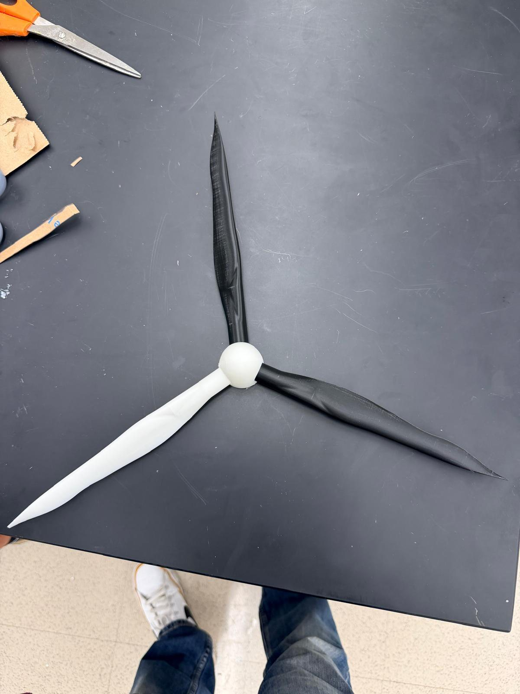

01
STAGE 01 · AIRFOIL ROTOR
Copy a real turbine
I modeled and printed a three-blade airfoil rotor — thin, twisted, tapered blades on a printed spherical hub, scaled down from a full-size machine. On paper that is the right answer: real turbines use lift-driven airfoils because they are far more efficient.
Put in front of the wind, it would not start turning. Not slowly — at all. A rotor that does not move produces no torque and no voltage, so both deliverables were dead at the same time.
- 3 BLADES
- 3D-PRINTED PLA
- LIFT-DRIVEN
- DID NOT SELF-START
